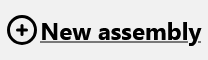
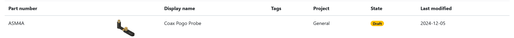

BOM for PCBAs and Assemblies
To export your BOM, use the CSV table exporter in the left hand bottom corner of the table. If you want to import a different BOM, also using .csv click on the Import BOM button. After the .csv is processed you will get an overview of the MPNs, designators, quantity, and DNM. On the left side you can link the columns as you want from the csv to the processed data. Click submit to sync and upload the BOM.
To remove a row from your BOM click on the trash icon. If you want to start over again, you can empty your BOM using the Clear BOM button. This will remove all current rows in the BOM.
The pricing data of the BOM is based on the pricing data of the parts that make it up. To get an accurate price model for your BOMs, update and set the pricing data of the parts that you use in the BOM. The total price of a PCBA or an Assembly, can be viewed at the Overview tab, using the BOM as the baseline. A manual price point can also be added.
A P.O, or Purchase Order, can be generated from your BOM. This will create a new PO with the parts in your BOM that has pricing data. To create a new PO from a BOM, click on the Create PO from BOM button. This will open a form including a new table displaying your BOM. Select the supplier you want for each part, and choose to ignore or include a part in the PO. By default, all parts are included, however, parts that do not have any pricing data, will not be included in the generation of the PO. Click Create PO to generate.
Assemblies
To create a new assembly:
Click on **Assemblies** in the sidebar: or go to /assemblies in your browser.
Next click on **New assembly** 
A modal dialog will open, enter your information about the new assembly, then hit submit when you are done:
Navigate to the assembly by clicking on it in the table, or open it in a new tab by using ctrl + click.

The dashboard for assemblies is similar to PCBAs and parts dashboard, so take a look at them for more information.
Part/item relations
Assemblies are the top level of parts. The levels are defined based on the BOM relation of the part items. Note: The term part items here means everything that is either a part, pcba, or an assembly.
- Assemblies: Top level, its BOM can contain Parts, PCBAs and other Assemblies.
- PCBAs: Mid level, its BOM can contain Parts, and other PCBAs.
- Parts:: The lowest level, they are standalone entities.
Similar to the PCBA, an assembly's pricing data is either based on its BOM, or any manually set price.